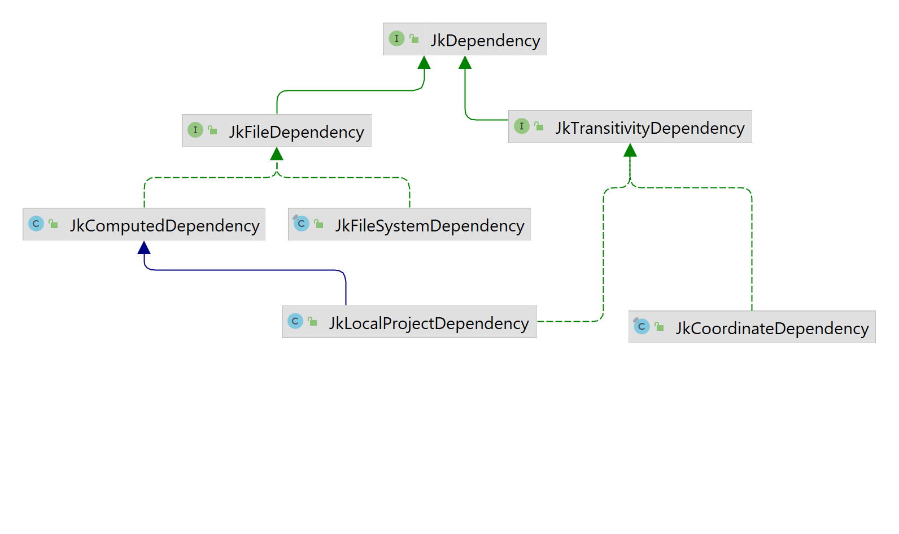

The Build Library¶
Jeka contains a library for all regular things you need to build/test/publish projects.. The library does not depend on the execution engine and has zero dependency.
API Style¶
Jeka tries to stick with a consistent API design style.
- All Jeka public classes/interfaces start with
Jk. The reason is for easing distinction, in IDE, between classes supposed be used in production or test and the ones used for building. It also helps to explore Jeka API. - As a rule of thumb Jeka favors immutable objects for shallow structures and parent-chaining trees for deeper ones. Both provide a fluent interface when possible.
- All objects are instantiated using static factory methods. Every factory method names start with
of. - All accessor method names (methods returning a result without requiring IO, only computation) starts with
get. - To create a subtly different object from another immutable one, Jeka provides :
- Methods starting with
withwhen a property is to be replaced by another. - Methods starting with
andwhen a collection property is to be replaced by the same one plus an extra element. - Methods starting with
minuswhen a collection property is to be replaced by the same one minus a specified element. - To modify a mutable object, Jeka provides :
- Methods starting with
setto replace a single property value by another. - Methods starting with
addto add a value to a collection property. Those methods return the object itself for chaining.
Domains Covered by the API¶
The previous example demonstrates how the Java/project API can be used to build and publish Java projects. This API relies on other lower level ones provided by Jeka. In a glance these are the domains covered by the Jeka APIs :
- Files : File trees, filters, zip, path sequence
- System : Launching external process, Logging, Meta-info
- Cryptography : PGP signer
- Dependency management : Dependency management, publishing on repositories
- Java : Compilation, javadoc, resource processor, manifest, packager, classloader, classpath, launching
- Testing : Launching tests and get reports
- Project : Project structure to build
- Tooling : Eclipse integration, intellij integration, Maven interaction, Git
- Support : Set of utility class with static methods to handle low-level concerns
Files¶
File manipulation is a central part for building software. Jeka embraces JDK7 java.nio.file API by adding some concepts around, to provide a powerful fluent style API performing recurrent tasks with minimal effort.
The following classes lie in dev.jeka.core.api.file package:
-
JkPathFileA simple wrapper for files (not folders). It provides copying, interpolation, checksum, deletion and creation methods. -
JkPathSequenceAn Immutable sequence ofjava.nio.file.Pathproviding methods for filtering or appending. -
JkPathMatcherAn immutablejava.nio.file.PathMatcherbased onjava.nio.fileglob pattern or regerxp. Used byJkPathTreeto filter in/out files according name patterns. -
JkPathTreeAn Immutable root folder (or a zip file) along aPathMatcherproviding operations to copy, navigate, zip or iterate. This is a central class in Jeka API. -
JkPathTreeSetAn Immutable set ofJkPathTree. Helpful to define set of sources/resources and create jar/zip files. -
JkResourceProcessorA mutable processor for copying a set of files, preserving the structure and replacing some text by other text. Typically, used for replacing token as${server.ip}by an actual value.
Examples
// creates a file and writes the content of the specified url.
JkPathFile.of("config/my-config.xml").createIfNotExist().replaceContentBy("http://myserver/conf/central.xml");
// copies all non java source files to another directory preserving structure
JkPathTree.of("src").andMatching(false, "**/*.java").copyTo("build/classes");
// One liner to zip an entire directory
JkPathTree.of("build/classes").zipTo(Paths.get("mylib.jar"));
System¶
The dev.jeka.core.api.system package provides system level functions :
-
JkInfoProvides meta information as the running version of Jeka. -
JkLocatorProvides information about where is located repository cache or Jeka user home. -
JkLogProvides API to log Jeka event. It supports hierarchical logs through#startTaskand#endtaskmethods. -
JkProcessLauncher for external process. -
JkPromptOne-liner to ask user input.
Dependency Management¶
Dependency management API let define, fetch and publish dependencies. Api classes belong to dev.jeka.core.api.depmanagement package
Concepts¶
Dependency¶
For Jeka, a dependency is something that can be resolved to a set of files by a JkDependencyResolver.
Generally a dependency resolves to 1 file (or folder) but it can be 0 or many.
A dependency is always an instance of JkDependency.
Jeka distinguishes mainly 3 types of dependency :
- Arbitrary files located on the file system (represented by
JkFileSystemDependencyclass). These files are assumed to be present on the file system when the build is running. - Files produced by a computation (represented by
JkComputedDependencyclass). These files may be present on file system or not. If they are not present, the computation is run in order to produce the missing files. Generally the computation stands for the build of an external project. - Reference to module (represented by
JkModuleDependency) hosted in a binary repository (Ivy or Maven for instance) : Jeka can consume and resolve transitively any artifact located in a repository as you would do with Maven, Ivy or Gradle.
For the last, Jeka is using Ivy 2.5.0 under the hood. Jeka jar embeds Ivy and executes it in a dedicated classloader to be hidden for client code.

JkModuleDependencies (dependency on module through coordinates)
This is for declaring a dependency on module hosted in Maven or Ivy repository. Basically you instantiate a JkModuleDepency from it's group, name and version.
JkDependencySet.of()
.and(JkPopularModule.GUAVA, "18.0")
.and("com.orientechnologies:orientdb-client:[2.0.8, 2.1.0[")
.and("mygroup:mymodule:myclassifier:0.2-SNAPSHOT");
Note that :
- A version ending by
-SNAPSHOThas a special meaning : Jeka will consider it "changing". This means that it won't cache it locally and will download the latest version from repository. - As Jeka relies on Ivy under the hood, it accepts dynamic versions as mentioned here.
- Dependency files are downloaded in [USER HOME]/.jeka/cache/repo
JkFileSystemSependency (dependency on local files)
Just mention the path of one or several files. If one of the files does not exist at resolution time (when the dependency is actually retrieved), build fails.
JkComputedDependenciy (dependency on files produced by computation)
It is typically used for multi-modules or multi-techno projects.
The principle is that if the specified files are not present, the computation is run in order to generate the missing files. If some files still missing after the computation has run, the build fails.
This mechanism is quite simple yet powerful as it addresses following use cases :
- Dependencies on files produced by an artifact producer (
JkArtifactProducer). AJkProjectis an artifact producer. - Dependencies on files produced by external build tool (Ant, Maven, Gradle, SBT, Android SDK, Make, npm ...).
- ... In other words, files produced by any means.
The generic way is to construct this kind of dependency using a java.lang.Runnable.
The following snippet constructs a set of dependencies on two external projects : one is built with Maven, the other with Jeka.
Path mavenProject = Paths.get("../a-maven-project");
JkProcess mavenBuild = JkProcess.of("mvn", "clean", "install").withWorkingDir(mavenProject);
Path mavenProjectJar = mavenProject.resolve("target/maven-project.jar");
JkJavaProject externalProject = JkJavaProject.ofSimple(Paths.get("../a-jeka-project"));
JkDependencySet deps = JkDependencySet.of()
.and(JkComputedDependency.of(mavenBuild, mavenProjectJar))
.and(externalProject);
DependencySet¶
A dependencySet (JkDependencySet) is an ordered bunch of dependencies used for a given purpose (compilation,
war packaging, testing, ...). It can contain any kind of JkDependency. See here
dependencySet also defines :
- A version provider to define which version of a module we should use in case it is not explicitly mentioned. It is possible to populate a version provider by passing a BOM coordinate.
- A set of transitive dependency exclusion rules.
It is designed as an immutable object where we can apply set theory operations for adding, removing or merging with other dependencies and dependencySet.
Example of dependency set
Note that :
- Module version and scopes can be omitted when declaring dependencies. Versions can be provided by a
JkVersionProvider. - Instances of
JkDependencySetcan be combined together in order to construct large dependencySet from smaller ones. JkDependencySet#ofTextDescriptionprovides a mean to instantiate a dependency set from a simple text.
Example of text describing dependencies
- COMPILE+RUNTIME
org.springframework.boot:spring-boot-starter-thymeleaf
org.springframework.boot:spring-boot-starter-data-jpa
- RUNTIME
com.h2database:h2
org.liquibase:liquibase-core
com.oracle:ojdbc6:12.1.0
- TEST
org.springframework.boot:spring-boot-starter-test
org.seleniumhq.selenium:selenium-chrome-driver:3.4.0
org.fluentlenium:fluentlenium-assertj:3.2.0
org.fluentlenium:fluentlenium-junit:3.2.0
- COMPILE
org.projectlombok:lombok:1.16.16
Transiitivity¶
Mainstream build tools use a single concept ('scope' or 'configuration') to determine both :
- Which part of the build needs the dependency
- Which transitive dependencies to fetch along the dependency.
- If the dependency must be part of the transitive dependencies according a configuration.
This confusion leads in dependency management systems that are bloated, difficult to reason about and not quite flexible. Gradle comes with a proliferation of 'configurations' to cover most use case combinations, while Maven narrows 'scopes' to a fewer but with limitations and not-so-clear transitivity/publish rules.
In the opposite, Jeka distinguishes clearly the three purposes :
- Jeka uses distinct dependencySet instances for each part of the build (compile, runtime, test,...). Each can be defined relatively to another using set theory operations.
- For each dependency, we can decide its transitivity, that is, the transitive dependencies fetched along the dependency.
- For publishing, we can optionally re-define a specific dependencySet, exposing exactly what we want.
Jeka defines by default, 3 levels of transitivity :
- NONE : Not transitive
- COMPILE : Also fetch transitive dependencies declared with scope 'compile' in the dependency published pom.
- RUNTIME : Also fetch transitive dependencies declared with any scope in the dependency published pom.
Reminder : on Maven repositories, published poms can declare only two scopes for transitive dependencies : 'compile' and 'runtime'.
For Ivy repositories, it is possible to declare a specific transitivity that maps to a slave 'configuration'.
The below example shows a JkJavaProject declaration using explicit transitivity.
JkJavaProject.of().simpleFacade()
.configureCompileDeps(deps -> deps
.and("com.google.guava:guava:23.0", JkTransitivity.NONE)
.and("javax.servlet:javax.servlet-api:4.0.1"))
.configureRuntimeDeps(deps -> deps
.and("org.postgresql:postgresql:42.2.19")
.withTransitivity("com.google.guava:guava", JkTransitivity.RUNTIME)
.minus("javax.servlet:javax.servlet-api"))
.configureTestDeps(deps -> deps
.and(Hint.first(), "org.mockito:mockito-core:2.10.0")
)
Declared Compile Dependencies : 2 elements.
com.google.guava:guava:23.0 transitivity:NONE
javax.servlet:javax.servlet-api:4.0.1
Declared Runtime Dependencies : 2 elements.
com.google.guava:guava:23.0 transitivity:RUNTIME
org.postgresql:postgresql:42.2.19
Declared Test Dependencies : 4 elements.
org.mockito:mockito-core:2.10.0
com.google.guava:guava:23.0 transitivity:RUNTIME
org.postgresql:postgresql:42.2.19
javax.servlet:javax.servlet-api:4.0.1
The API allows to redefine the transitivity declared in a upper dependency set.
Note that transitivity can only apply to JkModuleDependency (like com.google.guava:guava:23.0)
and JkLocalProjectDependency.
Resolve Dependencies¶
The JkDependencyResolver class is responsible JkDependencyResolver.of(JkRepo.ofMavenCentral());to resolve dependencies by returning JkResolveResult from a
JkdependencySet.
JkDependencySet deps = JkDependencySet
.of("org.apache.httpcomponents:httpclient:4.5.3")
.andFile("libs/my.jar");
// Here, module dependencies are fetched from Maven central repo
JkDependencyResolver resolver = JkDependencyResolver.of(JkRepo.ofMavenCentral());
JkResolveResult result = resolver().resolve(deps);
From the result you can :
- Navigate in the resolved dependency tree as :
JkDependencyNode slfjApiNodeDep = result.getDependencyTree().getFirst(JkModuleId.of("org.slf4j:slf4j-api"));
System.out.println(slfjApiNode.getModuleInfo().getResolvedVersion());
- Get the direct list of artifact files
JkPathSequence sequence = result.getFiles();
sequence.forEach(System.out::println); // print each files part of the dependency resolution
Publication¶
Jeka is able to publish on both Maven and Ivy repository. This includes repositories as Sonatype Nexus.
Maven and Ivy have different publication model, so Jeka proposes specific APIs according you want to publish on a Maven or Ivy repository.
Publish to a Maven repository¶
Jeka proposes a complete API to pubish on Maven repository. POM files will be generated by Jeka according provided elements.
The following snippet demonstrate a pretty sophisticated publishing on Maven :
JkVersionedModule versionedModule = JkVersionedModule.of("org.myorg:mylib:1.2.6");
JkDependencySet deps = JkDependencySet.of()
.and("org.slf4j:slf4j-simple", COMPILE_AND_RUNTIME)
.and("junit:junit:4.11", TEST);
JkMavenPublication mavenPublication = JkMavenPublication.of(Paths.get("org.myorg.mylib.jar"))
// the following are optional but required to publish on public repositories.
.and(Paths.get("org.myorg.mylib-sources.jar"), "sources")
.and(Paths.get("org.myorg.mylib-javadoc.jar"), "javadoc")
.withChecksums("sha-2", "md5")
.withSigner(JkPgp.of(Paths.get("myPubring"), Paths.get("mySecretRing"), "mypassword"))
.with(JkMavenPublicationInfo.of("My sample project",
"A project to demonstrate publishing on Jeka",
"http://project.jeka.org")
.andApache2License()
.andDeveloper("djeang", "myemail@gmail.com", "jeka.org", "http://project.jeka.org/"));
// A complex case for repo (credential + signature + filtering)
JkRepo repo = JkRepo.of("http://myserver/myrepo")
.withOptionalCredentials("myUserName", "myPassword")
.with(JkRepo.JkPublishConfig.of()
.withUniqueSnapshot(false)
.withNeedSignature(true)
.withFilter(mod -> // only accept SNAPSHOT and MILESTONE
mod.getVersion().isSnapshot() || mod.getVersion().getValue().endsWith("MILESTONE")
));
// Actually publish the artifacts
JkPublisher publisher = JkPublisher.of(repo);
publisher.publishMaven(versionedModule, mavenPublication, deps);
Notice that Jeka allows to :
- Publish more than one artifact.
- Produce & publish checksum files for each published artifact.
- Mention to use unique snapshot (What is it ?).
- Feed generated pom with data necessary to publish on central repository.
- Sign published artifact with PGP
- Publish to multiple repository by creating the publisher using a
JkRepoSetinstead of aJkRepo.
To sign with PGP, no need to have PGP installed on Jeka machine. Jeka uses Bouncy Castle internally to sign artifacts.
Publish to a Ivy repository¶
Publishing on Ivy repo is pretty similar than on Maven though there is specific options to Ivy.
JkVersionedModule versionedModule = JkVersionedModule.of("org.myorg:mylib:1.2.6-SNAPSHOT");
JkDependencySet deps = JkDependencySet.of()
.and("org.slf4j:slf4j-simple", COMPILE_AND_RUNTIME)
.and("junit:junit:4.11", TEST);
JkIvyPublication publication = JkIvyPublication.of(Paths.get("org.myorg.mylib.jar"), "master")
.and(Paths.get("org.myorg.mylib-sources.jar"));
JkRepo repo = JkRepo.ofIvy(Paths.get("ivyrepo"));
JkPublisher publisher = JkPublisher.of(repo);
publisher.publishIvy(versionedModule, publication, deps, JkJavaDepScopes.DEFAULT_SCOPE_MAPPING,
Instant.now(), JkVersionProvider.of());
Project Building¶
Jeka features high-level and low-level classes to deal with Java builds and JVM concepts.
Java Tool Base API¶
Base classes are used as foundation for implementing Jeka high-level build API but they can be used directly in a low level build description.
These classes belong to dev.jeka.core.api.java package.
-
JkClassLoaderandJkUrlClassloaderWrap ajava.lang.ClassLoaderadding convenient methods and classpath scanning capability. -
JkJarPackerA simple utility tyo create Jar or fat Jar file from compiled classes. -
JkJavaCompilerWraps either a Java Compiler tool, nor a javac process. -
JkJavadocProcessorA Java source processor producing standard Javadoc -
JkJavaProcessA utility to launch Java process (from class dirs or jars) -
JkManifestStands for the manifest file to include in jar files.
Testing API¶
Jeka features a simple yet powerful API to launch tests. It relies entirely on JUnit5. This means that any test framework supported by Junit5 platform.
Jeka testing API mostly hides Junit Platform. For most of the cases, you won't need to code against Junit-Platform API to launch tests with Jeka. Nevertheless, Jeka allows users to code against Junit-Platform for fine-tuning.
The API classes all belongs to dev.jeka.core.api.java.testing package.
JkTestProcessorThis is the entry point to launch tests. Tests are executed using the current classloader classpath + extra class path mentioned in#launchmethod arguments.JkTestResultThe result of a test launch : count for found, failure, skip, success ...JkTestSelectionA mean to determine which test to launch. It can be set using file or tag filter. It is also possible to code against JUnit Platform
Project API¶
This is the Jeka high-level API to build Java/JVM projects. API classes belong to dev.jeka.core.api.project package.
It introduces the concept of JkProject from where is performed compilation, testing, resources processing, packaging, publication and more.
JkProject is the root of a deep structure embracing the parent-chaining pattern for readability.
The API contains a lot of extension points to add specific behaviors.
Project API structure
project
+- baseDir
+- outputDir
+- artifactProducer (define artifacts to be produce by the build as map of artifactName -> Consumer<Path> producing the artifact)
+- duplicateDependencyConflictStrategy
+- construction (Produce packaged binaries from sources. This includes test checking)
| +- jvmTargetVersion
| +- sourceEncoding
| +- javaCompiler
| +- dependencyResolver
| +- runtimeDependencies
| +- manifest
| +- fatJar (customize produced fat/uber jar if any)
| +- compilation (produce individual binary files from production sources. This includes resource processing, code generation, transpiling, post binary processing, ...)
| | +- layout (where are located source and resource files)
| | +- dependencies (stands for compile dependencies)
| | +- preCompileActions (including resources processing)
| | +- compileActions (including java sources compilation. Compilation for other languages can be added here)
| | +- postCompileActions
| | +- methods : resolveDependencies(), run()
| +- testing
| | +- compilation (same as above 'compilation' but for test sources/resources)
| | | +- layout
| | | +- dependencies (stands for test dependencies)
| | | + ...
| | +- breakOnFailure (true/false)
| | +- skipped (true/false)
| | +- testProcessor
| | | +- forkedProcess (configured the forked process who will run tests)
| | | +- preActions
| | | +- postActions
| | | +- engineBehavior
| | | | +- progressDisplayer
| | | | +- launcherConfiguration (based on junit5 platform API)
| | | +- testSelection
| | | | +- includePatterns
| | | | +- includeTags
| | +- method : run()
| +- methods : createBinJar(), createFatJar(), resolveRuntimeDependencies(), getDependenciesAsXml()
| + includeLocalDependencies(), includeTextDependencies()
+- documentation (mainly procude javadoc and source jar)
| +- javadocConfiguration
| +- methods : createJavadocJar(), createSourceJar(), run()
+- publication (define information about module and artifacts to be published)
| +- moduleId (group:name)
| +- version
| +- maven (maven specific information to be published in a Maven Repositoty)
| | +- dependencyCustomizer (customize the dependencies to be published)
| | +- mavenSpecificInfo
| | +- methods : publish
| +- ivy (Ivy specific information to be published in a Ivy Repositoty)
| | +- dependencyCustomizer (customize the dependencies to be published)
| | +- ivySpecifictInfo
| | +- method : publish()
| +- methods : publish(), getVersion(), getModuleId()
+ methods : getArtifacctPath(artifactName), toDependency(transitivity), getIdeSupport(), pack()
For simplicitys sake, JkProject provides a facade in order to setup common settings friendly,
without navigating deep into the structure. From facade, you can
setup dependencies, java version, project layout, test behavior, test selection and publication.
JkProject.of().simpleFacade()
.configureCompileDeps(deps -> deps
.and("com.google.guava:guava:21.0")
.and("com.sun.jersey:jersey-server:1.19.4")
.and("org.junit.jupiter:junit-jupiter-engine:5.6.0"))
.configureRuntimeDeps(deps -> deps
.minus("org.junit.jupiter:junit-jupiter-engine")
.and("com.github.djeang:vincer-dom:1.2.0"))
.configureTestDeps(deps -> deps
.and("org.junit.vintage:junit-vintage-engine:5.6.0"))
.addTestExcludeFilterSuffixedBy("IT", false)
.setJavaVersion(JkJavaVersion.V8)
.setPublishedModuleId("dev.jeka:sample-javaplugin")
.setPublishedVersion("1.0-SNAPSHOT");
If facade is not sufficient for setting up project build, it's still possible to complete through the main API.
JkProject instances are highly configurable.
Here is a pretty complete example inspired from the Jeka Build Class .
Third Party Tool Integration¶
The dev.jeka.core.api.tooling package provides integration with tools developers generally deal with.
Eclipse¶
JkEclipseClasspathGenerator and JkEclipseProjectGenerator provides method to generate a proper .classpath and .project file respectively.
JkEclipseClasspathApplier reads information from a .classpath file.
Intellij¶
JkIntellijImlGenerator generates proper .iml files.
Git¶
JkGitWrapper wraps common Git commands in a lean API.
Maven¶
JkMvn wraps Maven command line in a lean API
JkPom reads POM/BOM to extract information like : declared dependencies, dependency management, repos,
properties, version and artifactId.